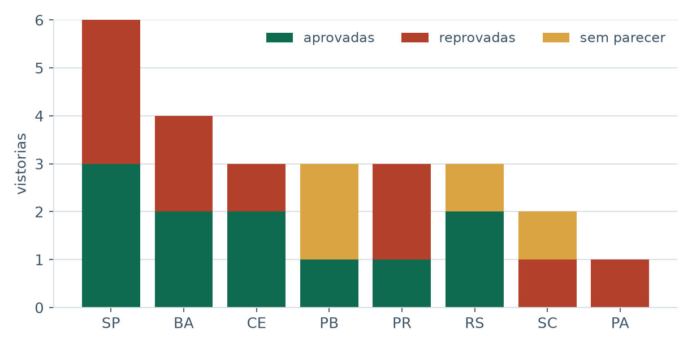
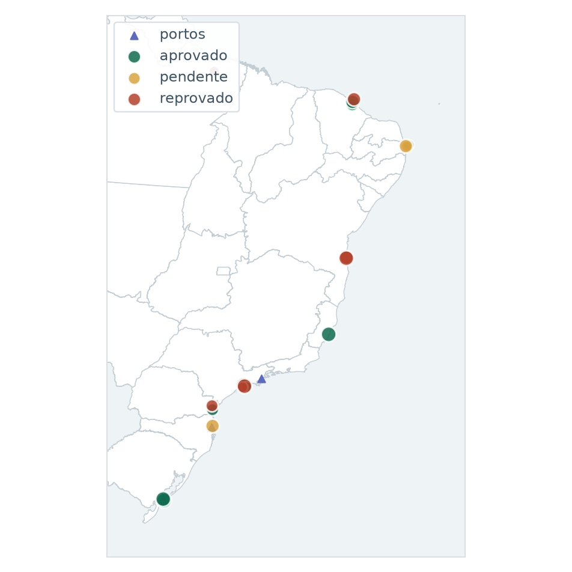
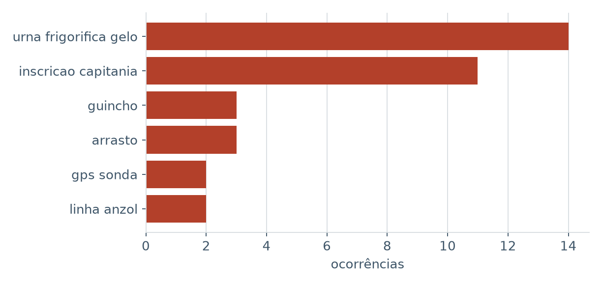
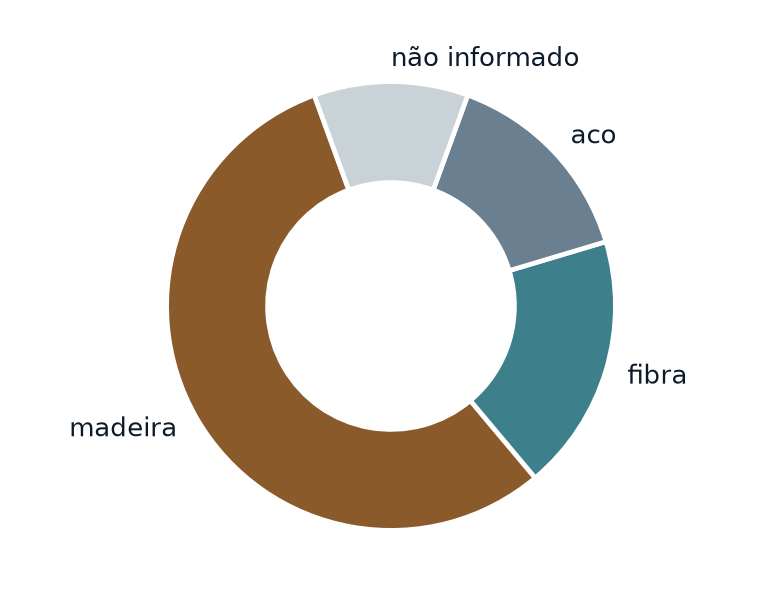

<title>Baliza — Vistoria de Embarcação Pesqueira</title>
<meta name="description" content="Aplicativo de vistoria de embarcação pesqueira. Funciona sem internet no barco, monta o relatório de vistoria em PDF e deixa a decisão técnica com o vistoriador.">
<link rel="preconnect" href="https://fonts.googleapis.com">
<link rel="preconnect" href="https://fonts.gstatic.com" crossorigin>
<link rel="stylesheet" href="https://fonts.googleapis.com/css2?family=Archivo:wght@500;600;700&family=Source+Serif+4:opsz,wght@8..60,400;8..60,600&display=swap">

<style>
  :root {
    --ground: #ffffff;
    --ground-2: #f3f6f7;
    --surface: #ffffff;
    --mar: #e7eff2;
    --tinta: #0b1b2b;
    --tinta-2: #3e5568;
    --tinta-3: #6a8091;
    --linha: #d8dee2;
    --linha-forte: #b6c2c9;

    --sinal: #d9531e;
    --sinal-escuro: #a83c12;
    --conforme: #0f6b4f;

    --sans: Archivo, ui-sans-serif, system-ui, sans-serif;
    --serif: "Source Serif 4", Georgia, "Times New Roman", serif;
  }

  @media (prefers-color-scheme: dark) {
    :root:not([data-theme="light"]) {
      --ground: #07141d;
      --ground-2: #0c1e29;
      --surface: #0e2331;
      --mar: #0d2b3a;
      --tinta: #e9f0f4;
      --tinta-2: #a9bfcc;
      --tinta-3: #7d95a3;
      --linha: #1e3948;
      --linha-forte: #2d4f61;
      --sinal: #ff7a4d;
      --sinal-escuro: #ffa384;
      --conforme: #55c79d;
    }
  }

  :root[data-theme="dark"] {
    --ground: #07141d;
    --ground-2: #0c1e29;
    --surface: #0e2331;
    --mar: #0d2b3a;
    --tinta: #e9f0f4;
    --tinta-2: #a9bfcc;
    --tinta-3: #7d95a3;
    --linha: #1e3948;
    --linha-forte: #2d4f61;
    --sinal: #ff7a4d;
    --sinal-escuro: #ffa384;
    --conforme: #55c79d;
  }

  * { box-sizing: border-box; }

  body {
    margin: 0;
    background: var(--ground);
    color: var(--tinta);
    font-family: var(--serif);
    font-size: 17px;
    line-height: 1.65;
    -webkit-font-smoothing: antialiased;
  }

  .faixa { padding: 0 24px; }
  .interno { max-width: 960px; margin: 0 auto; }
  .estreito { max-width: 660px; }

  h1, h2, h3, .rotulo, .selo, figcaption, .legenda, summary, .marca {
    font-family: var(--sans);
  }

  .rotulo {
    font-size: 12px;
    font-weight: 700;
    letter-spacing: 0.16em;
    text-transform: uppercase;
    color: var(--sinal);
    margin: 0 0 14px;
  }

  header { border-bottom: 1px solid var(--linha); }

  .barra {
    display: flex;
    align-items: baseline;
    gap: 12px;
    padding: 18px 0;
  }

  .marca { font-weight: 700; font-size: 19px; letter-spacing: -0.01em; }
  .marca em { font-style: normal; color: var(--sinal); }
  .barra span { font-size: 14px; color: var(--tinta-3); }

  .abertura { padding: 64px 0 40px; }

  h1 {
    font-size: clamp(34px, 6vw, 54px);
    font-weight: 700;
    line-height: 1.05;
    letter-spacing: -0.025em;
    margin: 0 0 20px;
    text-wrap: balance;
    max-width: 17ch;
  }

  .chamada {
    font-size: clamp(18px, 2.4vw, 21px);
    color: var(--tinta-2);
    max-width: 56ch;
    margin: 0 0 26px;
  }

  .selo {
    display: inline-block;
    font-size: 13px;
    font-weight: 600;
    color: var(--tinta-2);
    background: var(--ground-2);
    border: 1px solid var(--linha);
    border-radius: 999px;
    padding: 6px 14px;
  }

  .secundario-claro {
    display: inline-block;
    margin-left: 16px;
    font-family: var(--sans);
    font-size: 14px;
    font-weight: 600;
    text-decoration: none;
  }

  .secundario-claro:hover { text-decoration: underline; }

  figure { margin: 0; }

  .cena {
    margin: 40px 0 0;
    background: var(--ground-2);
    border: 1px solid var(--linha);
    border-radius: 14px;
    padding: 24px;
  }

  .cena svg { display: block; width: 100%; height: auto; }

  figcaption {
    font-size: 14px;
    color: var(--tinta-3);
    margin-top: 14px;
    max-width: 62ch;
  }

  section { padding: 60px 0; border-top: 1px solid var(--linha); }

  h2 {
    font-size: clamp(26px, 3.6vw, 34px);
    font-weight: 700;
    letter-spacing: -0.02em;
    line-height: 1.15;
    margin: 0 0 18px;
    text-wrap: balance;
    max-width: 20ch;
  }

  h3 { font-size: 19px; font-weight: 600; margin: 0 0 8px; }

  p { margin: 0 0 18px; }
  p:last-child { margin-bottom: 0; }

  .colunas {
    display: grid;
    grid-template-columns: repeat(auto-fit, minmax(250px, 1fr));
    gap: 30px;
    margin-top: 34px;
  }

  .bloco p { font-size: 16px; color: var(--tinta-2); }

  .contraste {
    background: var(--ground-2);
    border-radius: 14px;
    padding: 32px;
    margin-top: 30px;
    display: grid;
    grid-template-columns: repeat(auto-fit, minmax(255px, 1fr));
    gap: 30px;
  }

  .faz h3 { color: var(--conforme); }
  .naofaz h3 { color: var(--sinal); }

  .contraste ul {
    margin: 0;
    padding-left: 20px;
    font-size: 16px;
    color: var(--tinta-2);
  }

  .contraste li { margin-bottom: 10px; }

  .rastro {
    border: 1px solid var(--linha);
    border-radius: 12px;
    overflow: hidden;
    margin: 26px 0 0;
  }

  .rastro > div {
    display: grid;
    grid-template-columns: minmax(120px, 26%) 1fr;
    gap: 16px;
    padding: 14px 20px;
    border-bottom: 1px solid var(--linha);
    background: var(--surface);
    font-size: 16px;
  }

  .rastro > div:last-child { border-bottom: none; }

  .rastro dt {
    font-family: var(--sans);
    font-weight: 600;
    font-size: 14px;
    margin: 0;
  }

  .rastro dd { margin: 0; color: var(--tinta-2); }

  /* Duas colunas fixas: os quatro paineis se leem aos pares, e o auto-fit
     deixava um sozinho na ultima linha. */
  .telas {
    display: grid;
    grid-template-columns: repeat(2, minmax(0, 1fr));
    gap: 26px;
    margin-top: 32px;
  }

  @media (max-width: 620px) {
    .telas { grid-template-columns: 1fr; }
  }

  .tela {
    background: var(--surface);
    border: 1px solid var(--linha);
    border-radius: 12px;
    overflow: hidden;
  }

  .tela img { display: block; width: 100%; height: auto; }

  .tela p {
    font-family: var(--sans);
    font-size: 14px;
    color: var(--tinta-2);
    margin: 0;
    padding: 14px 18px;
    border-top: 1px solid var(--linha);
  }

  .amostra {
    display: grid;
    grid-template-columns: repeat(auto-fit, minmax(230px, 1fr));
    gap: 24px;
    margin-top: 30px;
  }

  .folha {
    display: block;
    border: 1px solid var(--linha);
    border-radius: 6px;
    overflow: hidden;
    background: #ffffff;
    box-shadow: 0 2px 14px rgba(11, 27, 43, 0.09);
    transition: box-shadow 0.2s ease, transform 0.2s ease;
  }

  .folha:hover {
    box-shadow: 0 6px 24px rgba(11, 27, 43, 0.16);
    transform: translateY(-2px);
  }

  .folha img { display: block; width: 100%; height: auto; }

  .legenda {
    font-size: 14px;
    color: var(--tinta-3);
    margin-top: 16px;
    max-width: 66ch;
  }

  /* ---------- demonstração ---------- */

  .demo {
    display: grid;
    grid-template-columns: repeat(auto-fit, minmax(230px, 1fr));
    gap: 26px;
    margin-top: 32px;
    align-items: start;
  }

  .demo-acao {
    background: var(--ground-2);
    border: 1px solid var(--linha);
    border-radius: 12px;
    padding: 26px 22px;
    text-align: center;
  }

  .demo-acao .botao { margin-top: 0; }

  .demo-meta {
    font-family: var(--sans);
    font-size: 13px;
    color: var(--tinta-3);
    margin: 14px 0 0;
  }

  .demo-nota h3 { font-size: 17px; margin-bottom: 12px; }

  .demo-nota ul {
    margin: 0;
    padding-left: 20px;
    font-size: 15px;
    color: var(--tinta-2);
  }

  .demo-nota li { margin-bottom: 8px; }

  .demo-rodape {
    font-size: 14px;
    color: var(--tinta-3);
    margin: 14px 0 0;
  }

  .demo-avisos {
    border: 1px solid var(--linha);
    border-radius: 12px;
    padding: 24px 26px;
    margin-top: 32px;
  }

  .demo-avisos p {
    font-size: 15px;
    color: var(--tinta-2);
    max-width: 68ch;
  }

  .demo-avisos p:last-child { margin-bottom: 0; }

  details { border-bottom: 1px solid var(--linha); padding: 18px 0; }

  summary {
    font-weight: 600;
    font-size: 17px;
    cursor: pointer;
    list-style: none;
    display: flex;
    justify-content: space-between;
    gap: 16px;
  }

  summary::-webkit-details-marker { display: none; }
  summary::after { content: "+"; color: var(--sinal); font-weight: 700; }
  details[open] summary::after { content: "\2013"; }

  details p {
    margin: 14px 0 0;
    color: var(--tinta-2);
    font-size: 16px;
    max-width: 62ch;
  }

  .contato {
    background: var(--tinta);
    border: 1px solid var(--linha-forte);
    border-radius: 14px;
    padding: 44px 36px;
    margin: 60px 0;
  }

  .contato h2 { color: var(--ground); margin-bottom: 12px; }
  .contato p { color: var(--ground); opacity: 0.85; max-width: 52ch; }

  .botao {
    display: inline-block;
    margin-top: 20px;
    font-family: var(--sans);
    font-weight: 600;
    font-size: 16px;
    color: var(--ground);
    background: var(--sinal);
    text-decoration: none;
    padding: 13px 26px;
    border-radius: 8px;
  }

  .botao:hover { background: var(--sinal-escuro); }

  .secundario {
    display: inline-block;
    margin: 18px 0 0 18px;
    color: var(--ground);
    font-family: var(--sans);
    font-size: 15px;
  }

  footer {
    border-top: 1px solid var(--linha);
    padding: 30px 0 56px;
    font-size: 14px;
    color: var(--tinta-3);
  }

  footer p { max-width: 70ch; margin-bottom: 10px; }

  a { color: var(--sinal); }
  a:focus-visible, summary:focus-visible {
    outline: 2px solid var(--sinal);
    outline-offset: 3px;
  }

  @media (prefers-reduced-motion: reduce) { * { transition: none !important; } }
</style>

<header class="faixa">
  <div class="interno barra">
    <span class="marca">Bal<em>i</em>za</span>
    <span>Vistoria de embarcação pesqueira</span>
  </div>
</header>

<main class="faixa">
  <div class="interno">

    <div class="abertura">
      <p class="rotulo">Feito para quem vistoria barco de pesca</p>
      <h1>A vistoria não para porque o sinal acabou.</h1>
      <p class="chamada">
        Barco de pesca quase nunca está onde tem internet. No Baliza, quem manda
        é o celular: você preenche a vistoria, fotografa e guarda tudo ali mesmo.
        Quando aparecer sinal, sobe sozinho — e o relatório sai pronto em PDF.
      </p>
      <span class="selo">Para vistoriadores credenciados no MPA</span>
      <a class="secundario-claro" href="#demonstracao">Experimentar no meu celular →</a>

      <figure class="cena">
        <svg viewBox="0 0 880 374" role="img"
             aria-label="No barco, sem internet, o celular grava a vistoria e as
                         fotos. Quando aparece sinal, tudo sobe para a nuvem, e
                         de lá saem duas coisas: o relatório em PDF e o painel
                         no navegador.">
          <defs>
            <marker id="h-seta" viewBox="0 0 10 10" refX="9" refY="5"
                    markerWidth="7" markerHeight="7" orient="auto-start-reverse">
              <path d="M0 0 L10 5 L0 10 z" fill="var(--sinal)"/>
            </marker>
          </defs>

          <rect x="10" y="40" width="396" height="216" rx="12" fill="none"
                stroke="var(--sinal)" stroke-width="2" stroke-dasharray="8 6"/>
          <text x="28" y="30" font-size="12" font-weight="700"
                fill="var(--sinal)" font-family="Archivo, sans-serif">
            NO BARCO — SEM INTERNET
          </text>

          <path d="M0 224 H392 V256 H0 Z" fill="var(--mar)"/>
          <path d="M0 224 q20 -6 40 0 t40 0 t40 0 t40 0 t40 0 t40 0 t40 0 t40 0
                   t40 0 t32 0" fill="none" stroke="var(--linha-forte)"
                stroke-width="2"/>

          <path d="M52 224 L74 198 H210 L232 224 Z" fill="none"
                stroke="currentColor" stroke-width="2.5" stroke-linejoin="round"/>
          <rect x="126" y="160" width="60" height="38" rx="3" fill="none"
                stroke="currentColor" stroke-width="2.5"/>
          <line x1="102" y1="198" x2="102" y2="132"
                stroke="currentColor" stroke-width="2.5"/>
          <line x1="102" y1="138" x2="144" y2="160"
                stroke="currentColor" stroke-width="2"/>
          <circle cx="102" cy="126" r="5" fill="var(--sinal)"/>

          <rect x="286" y="104" width="90" height="138" rx="13"
                fill="var(--surface)" stroke="currentColor" stroke-width="2.5"/>
          <rect x="316" y="112" width="30" height="4" rx="2"
                fill="currentColor" opacity="0.45"/>
          <rect x="294" y="124" width="74" height="11" rx="2"
                fill="var(--sinal)" opacity="0.3"/>
          <line x1="302" y1="152" x2="336" y2="152"
                stroke="currentColor" stroke-width="2" opacity="0.4"/>
          <path d="M342 152 l5 5 l10 -12" fill="none" stroke="var(--conforme)"
                stroke-width="2.4" stroke-linecap="round" stroke-linejoin="round"/>
          <line x1="302" y1="176" x2="336" y2="176"
                stroke="currentColor" stroke-width="2" opacity="0.4"/>
          <path d="M342 176 l5 5 l10 -12" fill="none" stroke="var(--conforme)"
                stroke-width="2.4" stroke-linecap="round" stroke-linejoin="round"/>
          <line x1="302" y1="200" x2="326" y2="200"
                stroke="currentColor" stroke-width="2" opacity="0.4"/>
          <rect x="316" y="230" width="30" height="4" rx="2"
                fill="currentColor" opacity="0.45"/>

          <circle cx="286" cy="104" r="13" fill="var(--sinal)"/>
          <text x="286" y="109" text-anchor="middle" font-size="14"
                font-weight="700" fill="#ffffff"
                font-family="Archivo, sans-serif">1</text>
          <text x="331" y="286" text-anchor="middle" font-size="13"
                font-weight="600" fill="currentColor"
                font-family="Archivo, sans-serif">
            checklist e fotos
          </text>
          <text x="331" y="306" text-anchor="middle" font-size="13"
                fill="currentColor" opacity="0.7"
                font-family="Archivo, sans-serif">
            gravados no aparelho
          </text>

          <line x1="418" y1="172" x2="502" y2="172" stroke="var(--sinal)"
                stroke-width="2.5" stroke-dasharray="7 6"
                marker-end="url(#h-seta)"/>
          <text x="460" y="160" text-anchor="middle" font-size="13"
                fill="var(--sinal)" font-family="Archivo, sans-serif">
            quando houver sinal
          </text>

          <path d="M520 196 a24 24 0 0 1 24 -24 a30 30 0 0 1 56 6
                   a20 20 0 0 1 -4 40 h-62 a22 22 0 0 1 -14 -22 z"
                fill="var(--surface)" stroke="currentColor" stroke-width="2.5"
                stroke-linejoin="round"/>
          <circle cx="518" cy="168" r="13" fill="var(--sinal)"/>
          <text x="518" y="173" text-anchor="middle" font-size="14"
                font-weight="700" fill="#ffffff"
                font-family="Archivo, sans-serif">2</text>
          <text x="562" y="286" text-anchor="middle" font-size="13"
                font-weight="600" fill="currentColor"
                font-family="Archivo, sans-serif">
            sobem sozinhos
          </text>
          <text x="562" y="306" text-anchor="middle" font-size="13"
                fill="currentColor" opacity="0.7"
                font-family="Archivo, sans-serif">
            e a IA analisa as fotos
          </text>

          <path d="M614 178 q48 -6 78 -40" fill="none" stroke="var(--sinal)"
                stroke-width="2.5" marker-end="url(#h-seta)"/>
          <path d="M614 202 q48 6 78 40" fill="none" stroke="var(--sinal)"
                stroke-width="2.5" marker-end="url(#h-seta)"/>

          <path d="M706 44 h74 v104 h-74 z" fill="var(--surface)"
                stroke="currentColor" stroke-width="2.5"/>
          <line x1="720" y1="66" x2="766" y2="66"
                stroke="var(--sinal)" stroke-width="3"/>
          <line x1="720" y1="84" x2="766" y2="84"
                stroke="currentColor" stroke-width="2" opacity="0.4"/>
          <line x1="720" y1="100" x2="766" y2="100"
                stroke="currentColor" stroke-width="2" opacity="0.4"/>
          <line x1="720" y1="130" x2="754" y2="130"
                stroke="currentColor" stroke-width="2.5"/>
          <circle cx="706" cy="44" r="13" fill="var(--sinal)"/>
          <text x="706" y="49" text-anchor="middle" font-size="14"
                font-weight="700" fill="#ffffff"
                font-family="Archivo, sans-serif">3</text>
          <text x="812" y="86" font-size="13" font-weight="600"
                fill="currentColor" font-family="Archivo, sans-serif">
            relatório
          </text>
          <text x="812" y="106" font-size="13" fill="currentColor"
                opacity="0.7" font-family="Archivo, sans-serif">
            em PDF
          </text>

          <rect x="706" y="216" width="152" height="106" rx="8"
                fill="var(--surface)" stroke="currentColor" stroke-width="2.5"/>
          <line x1="706" y1="238" x2="858" y2="238"
                stroke="currentColor" stroke-width="2"/>
          <circle cx="719" cy="227" r="3.4" fill="currentColor" opacity="0.5"/>
          <circle cx="731" cy="227" r="3.4" fill="currentColor" opacity="0.5"/>
          <circle cx="743" cy="227" r="3.4" fill="currentColor" opacity="0.5"/>
          <rect x="722" y="288" width="16" height="22" fill="var(--conforme)"
                opacity="0.85"/>
          <rect x="746" y="270" width="16" height="40" fill="var(--sinal)"
                opacity="0.85"/>
          <rect x="770" y="282" width="16" height="28" fill="var(--conforme)"
                opacity="0.85"/>
          <path d="M806 306 q10 -30 22 -22 q10 6 20 -14" fill="none"
                stroke="var(--sinal)" stroke-width="2.2"
                stroke-linecap="round"/>
          <circle cx="806" cy="306" r="3" fill="var(--sinal)"/>
          <circle cx="848" cy="270" r="3" fill="var(--sinal)"/>
          <circle cx="706" cy="216" r="13" fill="var(--sinal)"/>
          <text x="706" y="221" text-anchor="middle" font-size="14"
                font-weight="700" fill="#ffffff"
                font-family="Archivo, sans-serif">4</text>
          <text x="782" y="344" text-anchor="middle" font-size="13"
                font-weight="600" fill="currentColor"
                font-family="Archivo, sans-serif">
            painel no navegador
          </text>
          <text x="782" y="362" text-anchor="middle" font-size="13"
                fill="currentColor" opacity="0.7"
                font-family="Archivo, sans-serif">
            números, mapa e laudos
          </text>
        </svg>
        <figcaption>
          Só a etapa 1 acontece no barco — e é a única que não pode falhar por
          falta de rede. Da nuvem saem duas coisas: o documento que você assina
          e o painel onde acompanha a operação.
        </figcaption>
      </figure>
    </div>

    <section>
      <p class="rotulo">O problema</p>
      <h2>O trabalho é no mar; o formulário é de escritório.</h2>
      <div class="estreito">
        <p>
          A rotina é conhecida: anotar no papel em cima do cais, fotografar com o
          celular e, à noite, passar tudo a limpo — tentando lembrar qual foto
          era de qual barco e qual medida era de qual casco.
        </p>
        <p>
          Essa passagem a limpo não acrescenta nada ao relatório. Só acrescenta
          chance de erro, e ela acontece justamente quando você já está cansado.
          O Baliza tira essa etapa: o que você registra no barco é o que entra no
          relatório.
        </p>
      </div>

      <figure class="cena">
        <svg viewBox="0 0 880 470" role="img"
             aria-label="Tela do checklist no aplicativo de campo: faixa de
                         sincronização dizendo quantas fotos ainda estão no
                         aparelho, modalidade de pesca por escolha única, itens
                         com as opções conforme, não conforme e não se aplica,
                         câmera em cada linha e botão de foto geral.">
          <defs>
            <marker id="a-ponta" viewBox="0 0 10 10" refX="5" refY="5"
                    markerWidth="5" markerHeight="5">
              <circle cx="5" cy="5" r="4" fill="var(--sinal)"/>
            </marker>
          </defs>

          <rect x="30" y="14" width="300" height="444" rx="26"
                fill="var(--surface)" stroke="currentColor" stroke-width="2.5"/>

          <rect x="44" y="42" width="272" height="392" fill="var(--ground-2)"/>

          <rect x="44" y="42" width="272" height="38" fill="currentColor"/>
          <text x="60" y="66" font-size="13" font-weight="600"
                fill="var(--ground)" font-family="Archivo, sans-serif">
            Checklist — Anexo IV
          </text>

          <rect x="44" y="84" width="272" height="32" fill="var(--sinal)"
                opacity="0.14"/>
          <circle cx="62" cy="100" r="6" fill="none" stroke="var(--sinal)"
                  stroke-width="1.8"/>
          <text x="78" y="105" font-size="12" fill="var(--sinal)"
                font-family="Archivo, sans-serif">
            3 foto(s) ainda no aparelho.
          </text>

          <text x="58" y="140" font-size="10" font-weight="700"
                letter-spacing="1.4" fill="currentColor" opacity="0.55"
                font-family="Archivo, sans-serif">MODALIDADE</text>

          <circle cx="64" cy="160" r="7" fill="none" stroke="var(--sinal)"
                  stroke-width="2"/>
          <circle cx="64" cy="160" r="3.4" fill="var(--sinal)"/>
          <text x="80" y="165" font-size="12.5" fill="currentColor"
                font-family="Archivo, sans-serif">Rede de Emalhar</text>

          <circle cx="64" cy="184" r="7" fill="none" stroke="currentColor"
                  stroke-width="1.6" opacity="0.45"/>
          <text x="80" y="189" font-size="12.5" fill="currentColor"
                opacity="0.55" font-family="Archivo, sans-serif">Arrasto</text>

          <text x="58" y="220" font-size="10" font-weight="700"
                letter-spacing="1.4" fill="currentColor" opacity="0.55"
                font-family="Archivo, sans-serif">EQUIPAMENTO</text>

          <g font-family="Archivo, sans-serif">
            <text x="58" y="242" font-size="12.5" fill="currentColor">Guincho</text>
            <rect x="58" y="250" width="126" height="24" rx="12" fill="none"
                  stroke="currentColor" stroke-width="1.4" opacity="0.6"/>
            <path d="M58 262 a12 12 0 0 1 12 -12 h30 v24 h-30 a12 12 0 0 1 -12 -12 z"
                  fill="var(--conforme)" opacity="0.85"/>
            <text x="85" y="266" text-anchor="middle" font-size="11"
                  font-weight="700" fill="#ffffff">C</text>
            <line x1="100" y1="250" x2="100" y2="274" stroke="currentColor"
                  stroke-width="1.4" opacity="0.6"/>
            <text x="121" y="266" text-anchor="middle" font-size="11"
                  fill="currentColor" opacity="0.75">NC</text>
            <line x1="142" y1="250" x2="142" y2="274" stroke="currentColor"
                  stroke-width="1.4" opacity="0.6"/>
            <text x="163" y="266" text-anchor="middle" font-size="11"
                  fill="currentColor" opacity="0.75">N.A.</text>
            <rect x="272" y="250" width="34" height="24" rx="12"
                  fill="var(--sinal)" opacity="0.16"/>
            <rect x="281" y="257" width="12" height="9" rx="2" fill="none"
                  stroke="var(--sinal)" stroke-width="1.5"/>
            <text x="299" y="266" font-size="10" font-weight="700"
                  fill="var(--sinal)">2</text>

            <text x="58" y="302" font-size="12.5" fill="currentColor">GPS / Sonda</text>
            <rect x="58" y="310" width="126" height="24" rx="12" fill="none"
                  stroke="currentColor" stroke-width="1.4" opacity="0.6"/>
            <text x="79" y="326" text-anchor="middle" font-size="11"
                  fill="currentColor" opacity="0.75">C</text>
            <line x1="100" y1="310" x2="100" y2="334" stroke="currentColor"
                  stroke-width="1.4" opacity="0.6"/>
            <rect x="100" y="310" width="42" height="24" fill="var(--sinal)"
                  opacity="0.85"/>
            <text x="121" y="326" text-anchor="middle" font-size="11"
                  font-weight="700" fill="#ffffff">NC</text>
            <line x1="142" y1="310" x2="142" y2="334" stroke="currentColor"
                  stroke-width="1.4" opacity="0.6"/>
            <text x="163" y="326" text-anchor="middle" font-size="11"
                  fill="currentColor" opacity="0.75">N.A.</text>
            <rect x="272" y="310" width="34" height="24" rx="12"
                  fill="var(--sinal)" opacity="0.16"/>
            <rect x="281" y="317" width="12" height="9" rx="2" fill="none"
                  stroke="var(--sinal)" stroke-width="1.5"/>
            <text x="299" y="326" font-size="10" font-weight="700"
                  fill="var(--sinal)">1</text>

            <text x="58" y="362" font-size="12.5" fill="currentColor">
              Urna Frigorifica com Gelo
            </text>
            <rect x="58" y="370" width="126" height="24" rx="12" fill="none"
                  stroke="currentColor" stroke-width="1.4" opacity="0.6"/>
            <text x="79" y="386" text-anchor="middle" font-size="11"
                  fill="currentColor" opacity="0.75">C</text>
            <line x1="100" y1="370" x2="100" y2="394" stroke="currentColor"
                  stroke-width="1.4" opacity="0.6"/>
            <text x="121" y="386" text-anchor="middle" font-size="11"
                  fill="currentColor" opacity="0.75">NC</text>
            <line x1="142" y1="370" x2="142" y2="394" stroke="currentColor"
                  stroke-width="1.4" opacity="0.6"/>
            <path d="M142 370 h30 a12 12 0 0 1 12 12 a12 12 0 0 1 -12 12 h-30 z"
                  fill="currentColor" opacity="0.28"/>
            <text x="163" y="386" text-anchor="middle" font-size="11"
                  font-weight="700" fill="currentColor">N.A.</text>
            <rect x="272" y="370" width="34" height="24" rx="12" fill="none"
                  stroke="currentColor" stroke-width="1.3" opacity="0.45"/>
            <rect x="281" y="377" width="12" height="9" rx="2" fill="none"
                  stroke="currentColor" stroke-width="1.4" opacity="0.6"/>
          </g>

          <rect x="176" y="404" width="126" height="30" rx="15"
                fill="var(--sinal)"/>
          <rect x="192" y="414" width="13" height="10" rx="2" fill="none"
                stroke="#ffffff" stroke-width="1.6"/>
          <text x="213" y="423" font-size="12" font-weight="600" fill="#ffffff"
                font-family="Archivo, sans-serif">Foto geral</text>

          <g font-family="Archivo, sans-serif">
            <polyline points="330,100 358,100 358,86 396,86" fill="none"
                      stroke="var(--sinal)" stroke-width="2"
                      marker-start="url(#a-ponta)"/>
            <text x="406" y="80" font-size="14" font-weight="600"
                  fill="currentColor">Nada some por falta de sinal</text>
            <text x="406" y="102" font-size="13" fill="currentColor"
                  opacity="0.75">
              a faixa diz o que ainda está guardado no aparelho
            </text>

            <polyline points="330,262 358,262 358,188 396,188" fill="none"
                      stroke="var(--sinal)" stroke-width="2"
                      marker-start="url(#a-ponta)"/>
            <text x="406" y="182" font-size="14" font-weight="600"
                  fill="currentColor">Conforme, não conforme ou não se aplica</text>
            <text x="406" y="204" font-size="13" fill="currentColor"
                  opacity="0.75">
              todo item começa em “não se aplica”: nada é dado como
            </text>
            <text x="406" y="224" font-size="13" fill="currentColor"
                  opacity="0.75">
              aprovado por esquecimento
            </text>

            <polyline points="330,262 366,262 366,290 396,290" fill="none"
                      stroke="var(--sinal)" stroke-width="2"/>
            <text x="406" y="284" font-size="14" font-weight="600"
                  fill="currentColor">A câmera fica na linha do item</text>
            <text x="406" y="306" font-size="13" fill="currentColor"
                  opacity="0.75">
              a foto já nasce amarrada àquele ponto — e o número
            </text>
            <text x="406" y="326" font-size="13" fill="currentColor"
                  opacity="0.75">
              mostra quantas você já tirou
            </text>

            <polyline points="308,419 358,419 358,392 396,392" fill="none"
                      stroke="var(--sinal)" stroke-width="2"
                      marker-start="url(#a-ponta)"/>
            <text x="406" y="386" font-size="14" font-weight="600"
                  fill="currentColor">Foto geral</text>
            <text x="406" y="408" font-size="13" fill="currentColor"
                  opacity="0.75">
              para a embarcação como um todo, fora do checklist
            </text>
          </g>
        </svg>
        <figcaption>
          A tela do checklist como ela é no aparelho. Cada foto sai daqui já com
          coordenada, horário e impressão digital — nada disso depende de rede.
        </figcaption>
      </figure>

      <div class="colunas">
        <div class="bloco">
          <h3>Sem internet, sem problema</h3>
          <p>
            Nenhuma tela do aplicativo precisa de sinal. Só o primeiro login pede
            internet, uma vez. Depois disso ele abre e funciona no mar, por
            quanto tempo for.
          </p>
        </div>
        <div class="bloco">
          <h3>O que não foi medido fica em branco</h3>
          <p>
            Nada é chutado. Medida que você não tomou aparece como
            <strong>N.A.</strong> no relatório — nunca como zero, que seria
            afirmar uma medida que ninguém fez.
          </p>
        </div>
        <div class="bloco">
          <h3>Foto sem GPS continua valendo</h3>
          <p>
            Quando o GPS não pega, a foto é guardada do mesmo jeito e o relatório
            diz que aquela não tem coordenada. Melhor do que inventar uma posição
            para preencher campo.
          </p>
        </div>
      </div>
    </section>

    <section>
      <p class="rotulo">Inteligência artificial</p>
      <h2>A IA olha a foto. Quem responde é você.</h2>
      <div class="estreito">
        <p>
          Depois que as fotos sobem, o sistema analisa cada uma e sugere o que
          reconheceu: a inscrição pintada no casco, o material, os petrechos e os
          equipamentos de bordo. Cada palpite vem com o grau de confiança.
        </p>
      </div>

      <div class="contraste">
        <div class="faz">
          <h3>O que ela faz</h3>
          <ul>
            <li>Lê a inscrição da Capitania no casco</li>
            <li>Diz se o casco parece de madeira, fibra ou aço</li>
            <li>Aponta petrechos e equipamentos que reconhece</li>
            <li>Avisa quando <strong>não</strong> conseguiu identificar</li>
          </ul>
        </div>
        <div class="naofaz">
          <h3>O que ela nunca faz</h3>
          <ul>
            <li>Aprovar ou reprovar um barco</li>
            <li>Preencher medidas ou arqueação</li>
            <li>Marcar item do checklist sozinha</li>
            <li>Entrar no relatório sem você confirmar</li>
          </ul>
        </div>
      </div>

      <figure class="cena">
        <svg viewBox="0 0 880 300" role="img"
             aria-label="Cartão de sugestão da IA no aplicativo: a foto que a
                         originou, o que a IA afirma, a confiança e o modelo, e
                         os três botões — confirmar, corrigir e descartar.">
          <defs>
            <marker id="i-ponta" viewBox="0 0 10 10" refX="5" refY="5"
                    markerWidth="5" markerHeight="5">
              <circle cx="5" cy="5" r="4" fill="var(--sinal)"/>
            </marker>
          </defs>

          <rect x="24" y="26" width="452" height="248" rx="12"
                fill="var(--surface)" stroke="currentColor" stroke-width="2"/>

          <rect x="46" y="50" width="104" height="94" rx="6"
                fill="var(--ground-2)" stroke="currentColor" stroke-width="1.6"/>
          <path d="M56 130 L84 100 L102 118 L118 106 L140 130 Z"
                fill="currentColor" opacity="0.25"/>
          <circle cx="122" cy="74" r="9" fill="currentColor" opacity="0.3"/>

          <g font-family="Archivo, sans-serif">
            <text x="168" y="72" font-size="15" font-weight="600"
                  fill="currentColor">Urna frigorífica com gelo</text>
            <text x="168" y="96" font-size="13" fill="currentColor"
                  opacity="0.75">identificada na imagem</text>
            <text x="168" y="130" font-size="13" fill="var(--sinal)"
                  font-weight="600">confiança alta (85%)</text>
            <text x="168" y="150" font-size="12" fill="currentColor"
                  opacity="0.6">modelo gemini-3.5-flash-lite</text>

            <rect x="46" y="196" width="122" height="34" rx="17" fill="none"
                  stroke="var(--conforme)" stroke-width="2"/>
            <path d="M66 213 l7 7 l13 -15" fill="none" stroke="var(--conforme)"
                  stroke-width="2.4" stroke-linecap="round"
                  stroke-linejoin="round"/>
            <text x="115" y="218" text-anchor="middle" font-size="13"
                  font-weight="600" fill="var(--conforme)">Confirmar</text>

            <rect x="180" y="196" width="112" height="34" rx="17" fill="none"
                  stroke="currentColor" stroke-width="1.8" opacity="0.75"/>
            <text x="236" y="218" text-anchor="middle" font-size="13"
                  font-weight="600" fill="currentColor">Corrigir</text>

            <rect x="304" y="196" width="122" height="34" rx="17" fill="none"
                  stroke="currentColor" stroke-width="1.8" opacity="0.75"/>
            <text x="365" y="218" text-anchor="middle" font-size="13"
                  font-weight="600" fill="currentColor">Descartar</text>

            <text x="46" y="256" font-size="12" fill="currentColor"
                  opacity="0.6">
              nenhuma das três marca item do checklist
            </text>

            <polyline points="480,88 512,88 512,64 546,64" fill="none"
                      stroke="var(--sinal)" stroke-width="2"
                      marker-start="url(#i-ponta)"/>
            <text x="556" y="58" font-size="14" font-weight="600"
                  fill="currentColor">Sempre com a foto ao lado</text>
            <text x="556" y="80" font-size="13" fill="currentColor"
                  opacity="0.75">
              você julga olhando a imagem, não a frase
            </text>

            <polyline points="480,132 512,132 512,146 546,146" fill="none"
                      stroke="var(--sinal)" stroke-width="2"
                      marker-start="url(#i-ponta)"/>
            <text x="556" y="140" font-size="14" font-weight="600"
                  fill="currentColor">Diz o quanto confia — e quem respondeu</text>
            <text x="556" y="162" font-size="13" fill="currentColor"
                  opacity="0.75">
              o modelo fica registrado junto do resultado
            </text>

            <polyline points="480,213 512,213 512,232 546,232" fill="none"
                      stroke="var(--sinal)" stroke-width="2"
                      marker-start="url(#i-ponta)"/>
            <text x="556" y="226" font-size="14" font-weight="600"
                  fill="currentColor">Corrigir também é resposta</text>
            <text x="556" y="248" font-size="13" fill="currentColor"
                  opacity="0.75">
              o que fica gravado é o seu texto, não o do modelo
            </text>
            <text x="556" y="268" font-size="13" fill="currentColor"
                  opacity="0.75">
              — e descartar vale igual
            </text>
          </g>
        </svg>
        <figcaption>
          Enquanto sobrar um cartão sem resposta, o relatório não sai. É a única
          coisa que a IA decide neste sistema: que você ainda precisa olhar.
        </figcaption>
      </figure>

      <div class="estreito" style="margin-top:26px">
        <p>
          Enquanto houver palpite que você não olhou, o sistema
          <strong>não deixa emitir o relatório</strong>. O parecer é seu, sob ART
          — e o aplicativo foi feito para deixar isso registrado, não para tomar
          o seu lugar.
        </p>
      </div>
    </section>

    <section>
      <p class="rotulo">Cada foto vira prova</p>
      <h2>Se cobrarem de você daqui a um ano, o registro responde.</h2>
      <div class="estreito">
        <p>
          No momento em que a foto é tirada, ainda sem internet, o aplicativo
          guarda junto dela:
        </p>
      </div>

      <dl class="rastro">
        <div>
          <dt>Onde</dt>
          <dd>A coordenada do local — ou o motivo de o GPS não ter pegado.</dd>
        </div>
        <div>
          <dt>Quando</dt>
          <dd>A hora em que a foto foi tirada, não a do envio.</dd>
        </div>
        <div>
          <dt>Qual arquivo</dt>
          <dd>
            Uma impressão digital da imagem, calculada no celular. Se alguém
            trocar a foto depois, ela não confere mais.
          </dd>
        </div>
        <div>
          <dt>Quem olhou</dt>
          <dd>O palpite da IA, com que confiança, e quem confirmou ou corrigiu.</dd>
        </div>
        <div>
          <dt>Quem concluiu</dt>
          <dd>
            O responsável técnico que deu o parecer, e quando. Só ele pode — nem
            o dono da conta faz isso no lugar dele.
          </dd>
        </div>
      </dl>
    </section>

    <section>
      <p class="rotulo">O relatório</p>
      <h2>Sai pronto, no formato que o MPA pede.</h2>
      <div class="estreito">
        <p>
          O PDF segue o formulário oficial de vistoria da Portaria MPA nº
          397/2024, com as fotos anexadas e a impressão digital de cada uma.
        </p>
        <p>
          Uma vez emitido, ele não muda mais. Precisou corrigir? Sai uma versão
          nova, e a anterior fica guardada. É assim que documento técnico se
          comporta.
        </p>
        <p>
          A assinatura é sua, feita com o seu certificado — no gov.br ou com
          ICP-Brasil. O sistema não assina no seu lugar, e a sua chave nunca fica
          guardada nele. Ele confere se o arquivo assinado é mesmo aquele
          relatório, se nada mudou depois da assinatura e se quem assinou é o
          responsável daquela vistoria.
        </p>
      </div>

      <div class="amostra">
        <a class="folha" href="laudo-demonstracao.pdf">
          
        </a>
        <a class="folha" href="laudo-demonstracao.pdf">
          
        </a>
      </div>

      <p class="legenda">
        Relatório gerado pelo sistema, com dados de exemplo. Clique para abrir o
        <a href="laudo-demonstracao.pdf">PDF completo</a> — repare que uma das
        fotos está sem coordenada, e o documento avisa isso em vez de esconder.
      </p>
    </section>

    <section>
      <p class="rotulo">Seus números</p>
      <h2>No fim do mês, você sabe o que a operação produziu.</h2>
      <div class="estreito">
        <p>
          O painel reúne o que as suas vistorias mostram: onde aprova mais, onde
          reprova, o que mais aparece como não conforme e onde os barcos estão.
          Sem planilha e sem digitar nada duas vezes.
        </p>
      </div>

      <div class="telas">
        <figure class="tela">
          
          <p>Aprovadas, reprovadas — e as que ainda não têm parecer.</p>
        </figure>
        <figure class="tela">
          
          <p>Onde cada vistoria aconteceu, pelo GPS das fotos.</p>
        </figure>
        <figure class="tela">
          
          <p>O que mais reprova na sua região.</p>
        </figure>
        <figure class="tela">
          
          <p>A frota que você vistoria, por material de casco.</p>
        </figure>
      </div>

      <p class="legenda">
        Telas do painel, com dados de exemplo. As contas são conservadoras de
        propósito: a taxa de aprovação sai só sobre as vistorias já concluídas, e
        as pendentes aparecem ao lado — número que esconde o que falta julgar
        parece mais firme do que é.
      </p>
    </section>

    <section id="demonstracao">
      <p class="rotulo">Experimente</p>
      <h2>Instale e faça uma vistoria agora, no seu celular.</h2>
      <div class="estreito">
        <p>
          A demonstração é o aplicativo de campo de verdade, não um vídeo nem
          uma simulação: você abre uma vistoria, preenche o checklist,
          fotografa e vê cada foto ser registrada com posição, horário e
          impressão digital. <strong>Ponha o telefone em modo avião antes, se
          quiser</strong> — é assim que ele foi feito para trabalhar.
        </p>
      </div>

      <div class="demo">
        <div class="demo-acao">
          <a class="botao" href="baliza-demonstracao.apk" download>
            Baixar para Android
          </a>
          <p class="demo-meta">
            21 MB · Android 6 ou superior
          </p>
        </div>
        <div class="demo-nota">
          <h3>O que a demonstração faz</h3>
          <ul>
            <li>Abre vistoria, armador e embarcação</li>
            <li>Checklist completo, com C, NC e N.A.</li>
            <li>Câmera por item, com posição e horário</li>
            <li>Funciona sem nenhum sinal</li>
          </ul>
        </div>
        <div class="demo-nota">
          <h3>O que fica de fora</h3>
          <ul>
            <li>Sincronização — nada sai do aparelho</li>
            <li>Análise das fotos pela IA</li>
            <li>Emissão do laudo em PDF</li>
            <li>Painel de gestão</li>
          </ul>
          <p class="demo-rodape">
            Essas etapas dependem de servidor. O laudo e o painel você vê
            acima, nesta página.
          </p>
        </div>
      </div>

      <div class="demo-avisos">
        <p>
          <strong>Nenhum dado seu sai do telefone.</strong> A demonstração não
          tem login, não conversa com servidor nenhum e não envia foto a lugar
          algum. Para removê-la, desinstale como qualquer aplicativo — ela sai
          inteira, com o que você tiver criado.
        </p>
        <p>
          O Android vai avisar que o arquivo veio de fora da Play Store e pedir
          sua autorização. Isso é esperado num aplicativo distribuído
          diretamente; a demonstração ainda não está publicada na loja.
        </p>
        <p>
          Na lista de permissões você verá <strong>acesso à internet</strong>,
          além de câmera e localização. Ela vem das bibliotecas que o
          aplicativo completo usa para sincronizar e fica no pacote mesmo sem
          uso — a demonstração não abre conexão alguma. Se preferir não
          confiar na nossa palavra, use o modo avião: tudo funciona igual.
        </p>
        <p>
          Ela se instala <strong>ao lado</strong> do aplicativo real, sem
          conflito — se depois você virar cliente, recebe o aplicativo completo
          sem precisar desinstalar nada. O que você criou na demonstração fica
          nela: seus registros de verdade começam limpos, como devem começar.
        </p>
      </div>
    </section>

    <section>
      <p class="rotulo">Dúvidas frequentes</p>
      <h2>O que costumam perguntar.</h2>

      <details>
        <summary>Preciso de internet no barco?</summary>
        <p>
          Não, em momento nenhum da vistoria. Só o primeiro login pede rede, uma
          única vez. Depois disso o aplicativo funciona offline pelo tempo que
          for, e os dados sobem sozinhos quando aparecer sinal.
        </p>
      </details>

      <details>
        <summary>A IA pode aprovar ou reprovar um barco?</summary>
        <p>
          Não. Ela sugere o que vê nas fotos, com grau de confiança, e o palpite
          fica pendente até você confirmar, corrigir ou descartar. Enquanto
          houver palpite sem revisão, o sistema não emite o relatório. O parecer
          é sempre seu, sob ART.
        </p>
      </details>

      <details>
        <summary>E se a foto ficar sem GPS?</summary>
        <p>
          A foto é guardada do mesmo jeito, com o motivo registrado, e o
          relatório declara que aquela não tem coordenada. Nenhuma posição é
          inventada para preencher o campo.
        </p>
      </details>

      <details>
        <summary>Outros vistoriadores enxergam os meus dados?</summary>
        <p>
          Não. Cada vistoriador credenciado vê apenas o que é dele, e essa
          separação é feita no banco de dados — não só na tela. O aplicativo do
          celular também não carrega nenhuma chave de servidor.
        </p>
      </details>

      <details>
        <summary>As minhas fotos vão treinar alguma IA?</summary>
        <p>
          Há uma trava no sistema para que foto de vistoria real não seja enviada
          a provedor de IA que use imagens em treinamento. O padrão é recusar;
          liberar exige configuração explícita.
        </p>
      </details>

      <details>
        <summary>Posso corrigir um relatório já emitido?</summary>
        <p>
          O relatório emitido não é alterado, e isso é proposital. A correção
          gera uma versão nova, com a anterior preservada — as duas ficam
          registradas.
        </p>
      </details>

      <details>
        <summary>Preciso de certificado digital?</summary>
        <p>
          Para assinar, sim: serve a conta gov.br nível prata ou ouro, que é
          gratuita, ou um certificado ICP-Brasil (e-CPF). Para fazer a vistoria e
          emitir o relatório, não é necessário.
        </p>
      </details>
    </section>

    <div class="contato">
      <h2>Quer ver funcionando?</h2>
      <p>
        Mostro o caminho inteiro: a captura no celular sem internet, o relatório
        saindo em PDF e a assinatura sendo conferida.
      </p>
      <a class="botao" href="https://wa.me/5573991051624">Falar no WhatsApp</a>
      <a class="secundario" href="manual.html">Ver o manual completo</a>
    </div>

  </div>
</main>

<footer class="faixa">
  <div class="interno">
    <p>
      <strong>Baliza</strong> — apoio à vistoria de embarcação pesqueira conforme
      a Portaria MPA nº 397/2024. O sistema organiza, registra e documenta; a
      responsabilidade técnica pelo parecer e pelo relatório é do vistoriador
      credenciado, sob ART/DHT.
    </p>
    <p>
      Documento assinado eletronicamente pode ser conferido no validador oficial
      do ITI, em <a href="https://validar.iti.gov.br">validar.iti.gov.br</a>.
    </p>
  </div>
</footer>
